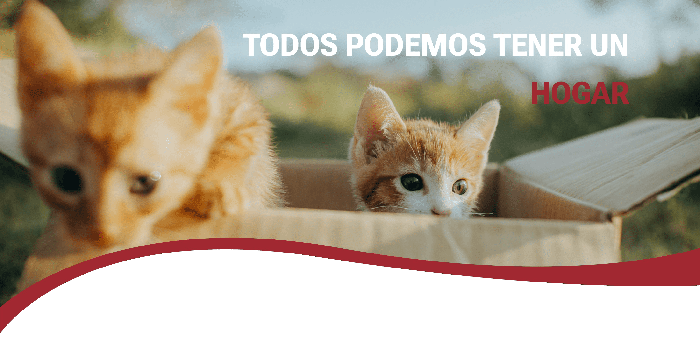
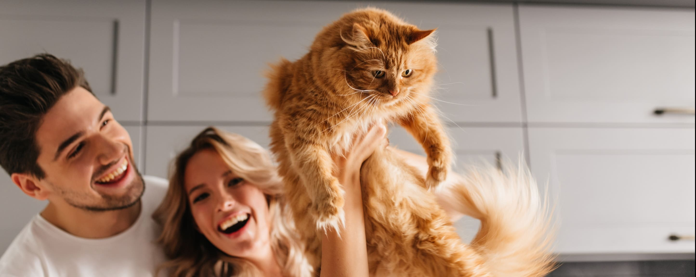

Nuestro objetivo principal es ayudar a rescatar perros y gatos en situación de abandono o maltrato en la ciudad de Santa Fe. A través de nuestra página web buscamos conectar a los animales en necesidad con personas que estén dispuestas a brindarles un hogar amoroso y seguro. Además, buscamos concientizar sobre la importancia de adoptar y no comprar animales, promoviendo una cultura de respeto y cuidado hacia los animales.

Adopta